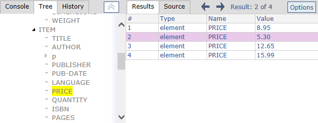
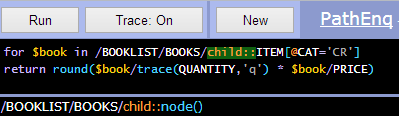
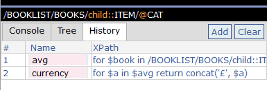
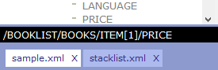

A small collection of PathEnq screenshots extracted from the full documentation.
With tree-view and source panels shown.
With tree-view and results panel shown.
The editor - with syntax coloring and interactive trace.
The History Panel - Set XPath variables/context from here by naming previous expressions.
Loaction bar shows XPath for currently item - Drop Zone below, for uploading local XML files.